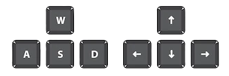

O '1v1 Button Soccer' é um jogo de futebol de botão 1
contra 1, no qual os dois jogadores controlam seus
respectivos botões de forma simultanea. O principal objetivo
do jogo é fazer o gol em seu adversário, sendo assim quem
fizer 5 gols primeiro é o vencedor.
Como Jogar:
- Para se movimentar é muito simples. O jogador vermelho
utiliza as teclas 'WASD' para se movimentar e o jogador
amarelo utiliza as setinhas do teclado.
